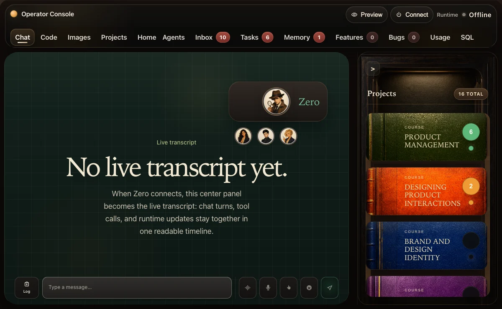
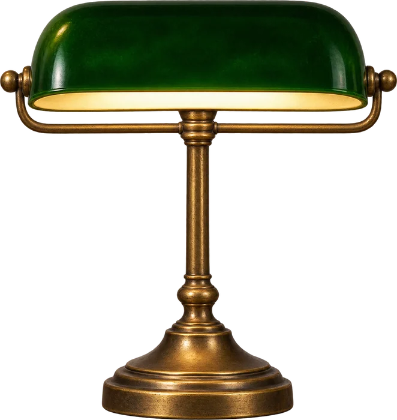
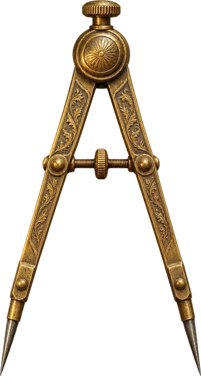
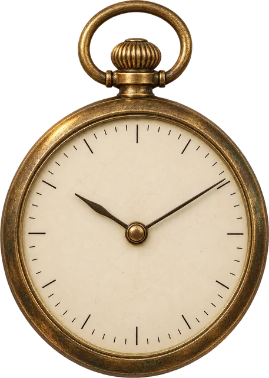
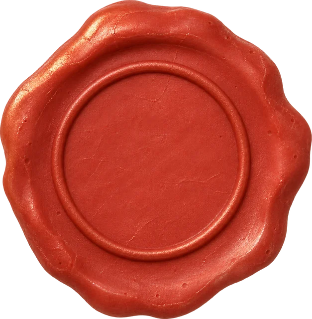
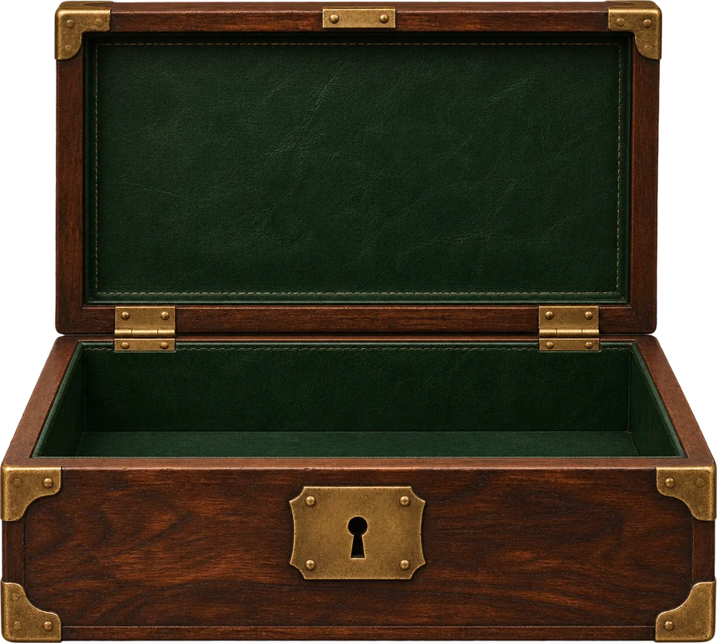

My own AI assistant. It listens, remembers my people and projects, runs parts of my home, and turns bugs and ideas into tracked work. I was the product manager, the designer and the only engineer.
95klines of Python
1,287automated tests
10workspaces
My role
Product, design, and every line of code
Built with
Python, Gemini Live, SQLite, ChromaDB, Home Assistant

The real console · offline, so the transcript is empty
Illustration of a real flow · device names simplified
01 · Router
Sort first. Think second.
Before any request reaches a big model, a small one drops it into one of six lanes.
A request comes in.Typed or spoken, it becomes one line of text.
A small model stamps it.It answers four things: which lane, how sure it is, why, and which tools are needed.
The lane picks the worker.A lamp switch never waits on a big model. Code goes to a coding model. Research runs in the background.
No model? Keywords take over.If the small model is down, a plain keyword list fills the same six lanes. Rougher guesses, but nothing breaks.
Why I built it: sending everything to the biggest model was slow and costly. Lanes make common requests take the same path every time.
Chatlive voice chat
Quick tasklights, todos, people
Codea coding model
Researchruns in the background
Judgmenta careful answer
Visionlooks at the image
Turn on the desk lamp
Fix the chat header spacing
Research e-ink screens overnight
What's in this screenshot?
How do I start my week?
Should I ship this today?
What the stamp says
Lane
Quick task
How sure
high
Why
asks to switch a device
Tools
home
Small model unreachable. Reading for keywords.
Example requests. The six lanes, the four answers and the keyword backup are how Zero's router works.
02 · Memory
Three drawers and one desk.
One long chat log is slow to search and easy to get wrong. Zero files each kind of thing where it belongs.
File it by kind.A preference, a hard fact and a loose note each go to a different drawer, built for how it will be found later.
Pull only what this moment needs.For each reply Zero lays out one briefing page, capped at 28,000 characters. The project in focus gets full detail; every other project gets one line.
Write back what changed.When a session ends, Zero reads it back and adds the new todos, decisions and open questions to the project.
Why three: facts I must be able to check live in a database. Fuzzy things I only half remember are found by meaning.
InstantFactsMeaning
InstantPreferences and nicknames. One small file, read in under a tenth of a second.
FactsProjects, deadlines, people, bugs. Rows in a database, so every fact can be checked.
MeaningOld chats, saved pages and notes, stored by what they mean. Search works without the exact words.

"What should I do on my thesis tonight?"
"Keep your answers short."
"My thesis draft is due Friday."
"Note: the methods section needs sources."
from InstantKeep answers short
from FactsThesis draft · due Friday
from MeaningMethods section needs sources
new todoAdd sources to methods
Briefing page · capped at 28,000 characters
Example cards. The three stores, the 28,000-character cap and the write-back are real.
03 · Voices
Four voices. One brain.
Some moments need a quick answer, some need warmth. I can switch who Zero sounds like in the middle of a conversation.
A voice is two settings.A spoken voice from Gemini Live, and a short note on manner. That is the whole persona.
Turning the dial swaps only those two.Same question, four very different replies.
Everything else stays put.Memory, tools and the router do not change, so no voice ever forgets me.
ZeroSnappy strategistEmberWarm and caringPipUltra-succinctMuseCreative thinker
The whole persona
VoiceCharon
Manner
Same memory
Same tools
Same router
Sample reply to "I'm behind on my thesis"
Sample replies show each manner. The voices and the four personas are Zero's real ones.
04 · Council
When one answer isn't enough, three models argue.
Ask, with the notes attached.The question goes on the table together with the project's context, so nobody argues from nothing.
Three seats answer at the same time.The Skeptic hunts for what could fail. The Architect thinks about structure. The Shipper wants the smallest next step.
A fourth, the Judge, rules.It reads all three and writes one clear ruling with ordered next steps.
The ruling becomes work.One click turns it into a task, a decision, a note or a bug.
Why seats: a single answer hides the disagreement. Three opposed roles put the risk, the structure and the shortcut side by side before I decide.
+ project notes attached
"Should Zero add things to my calendar without asking?"
The Skepticfinds what could fail

The Architectthinks in systems

The Shipperwants the smallest step
One wrong guess and my real calendar is wrong. I won't notice until I miss something.
Keep a draft layer between Zero and the calendar. Every write goes through one place.
Show a draft with a Confirm button. Ship that today, automate later.
The Judge rules
Draft first. Write only after I confirm.

The Judgereads all three
Task
Decision
Note
Bug
Debate lines show the format. The draft-first rule is how Zero's calendar and reminders really work.
05 · Build loop
Zero helps build Zero.
My own daily use is the backlog. Every complaint goes round the same loop.
It breaks.I say "save this as a bug" without leaving what I was doing.
Pinned, with evidence.Zero attaches the exact error, the tool call and the conversation. The same bug twice merges into one card.
Handed off.From the same screen I pass the card to a coding agent, with all of that attached.
Reviewed and sealed.I read what changed, the tests run, and only then is the bug closed.
The product thinking: bugs, ideas and decisions live in one database, not in my head.
1 · It breaks
2 · Pinned
3 · Handed off
4 · Sealed
the exact error
the tool call
the conversation
BugVoice cuts out after a long replyfix attached
,
automated tests guard each change
Example bug. The evidence links, the merge of repeats and the test count are real.
06 · Trust and cost
An assistant you can leave running.
Zero touches my calendar, my home and my code. What it may do on its own was a product decision each time.
Asks before it writes.Calendar and reminder changes start as a draft. Nothing is saved until I confirm.
Data stays home.The databases, the memory and the notes live on my own machine.
Locked outside the house.Inside my home network plain addresses are fine. Anything outside must use https, or Zero refuses the connection.
No secrets in the logs.Keys and tokens are blacked out before a line is written.
Every session has a price tag.A usage view estimates what each session cost and counts every tool call.
DraftDentist Tue, 3:00 pm
Confirm

Databases
Memory
Notes
On my machine. Not in someone else's cloud.
inside my home networkhttp://192.168.1.20
allowed
outsidehttps://zero.example.com
refused
log
10:42 calendar draft created
10:42 token = 9f3a-77c2-41e0
10:43 fan switched off
this session≈ $0.1214 tool calls
estimated cost per session
every tool call counted
a confidence label on each estimate
Example values. The five rules are how Zero is built.
What I learned
The hard part isn't another model call.
It is deciding what the assistant should do on its own, what it should confirm, and what it should keep visible. Zero made me think like the designer, the engineer and the product owner at once.
Decisions and tradeoffs
An experiment, not a product demo
It shows how I think through fuzzy AI problems: what to automate, what to confirm, what to show.
Tradeoff: some parts are deeper than others.A router before model calls
Clear requests take a fixed, fast path. The model only handles the open-ended ones.
Tradeoff: the routing rules need upkeep when a request mixes intents.Three memory stores instead of one chat log
Hard facts stay checkable in SQL; meaning search finds the rest.
Tradeoff: more moving parts to keep in sync.
What I'd do next: give people clearer controls over what Zero remembers about them, and tighten the story so it never reads as a pile of features.